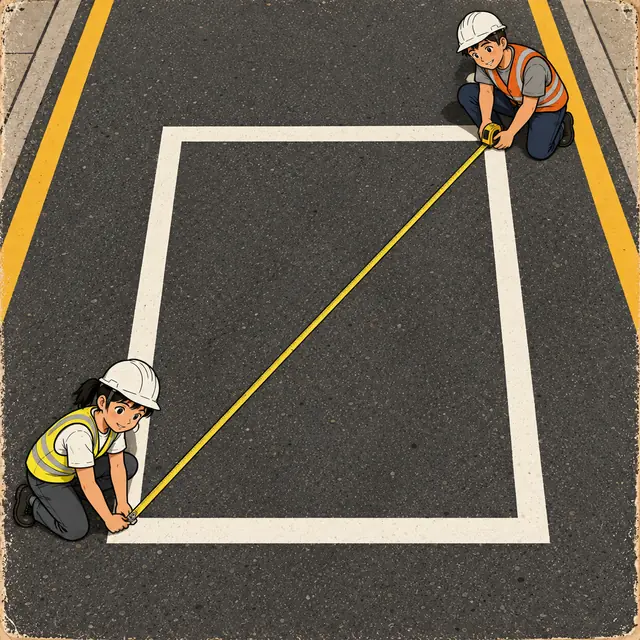
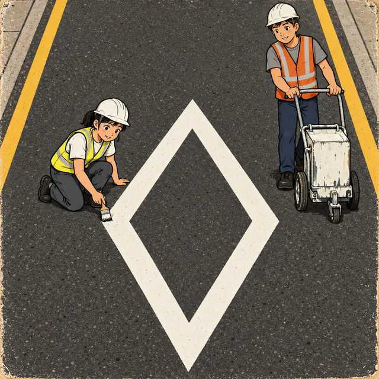
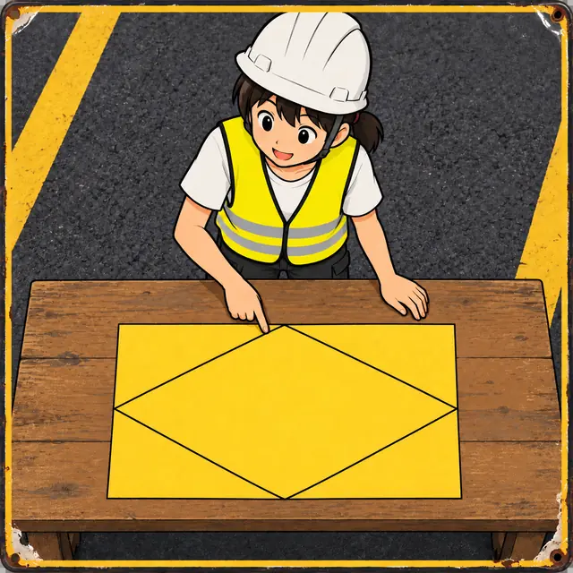
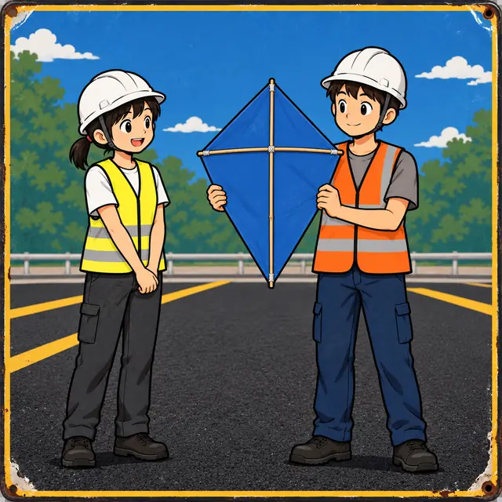
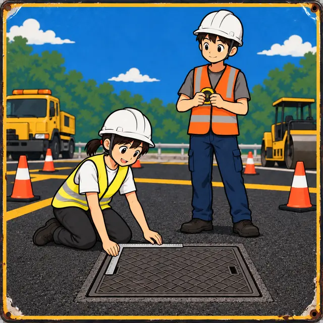
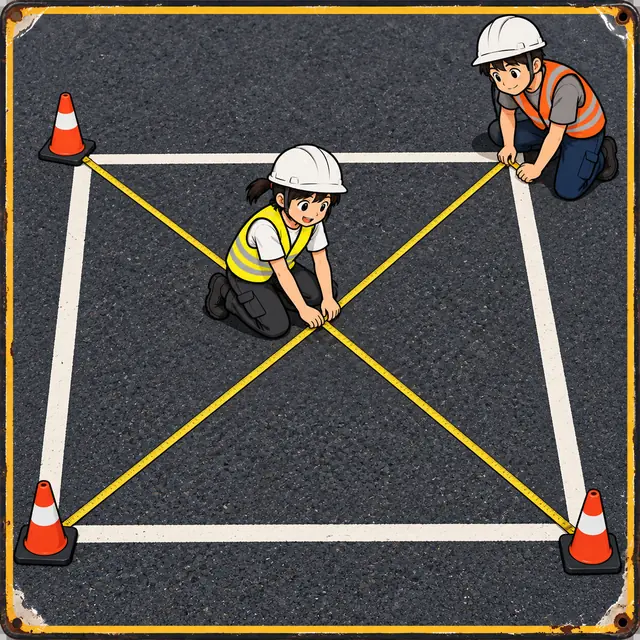
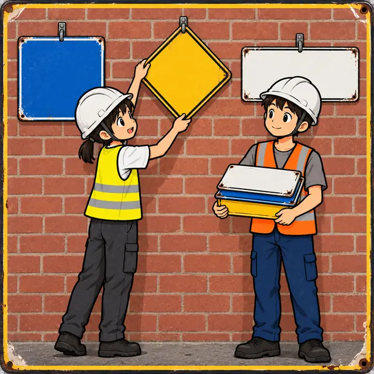
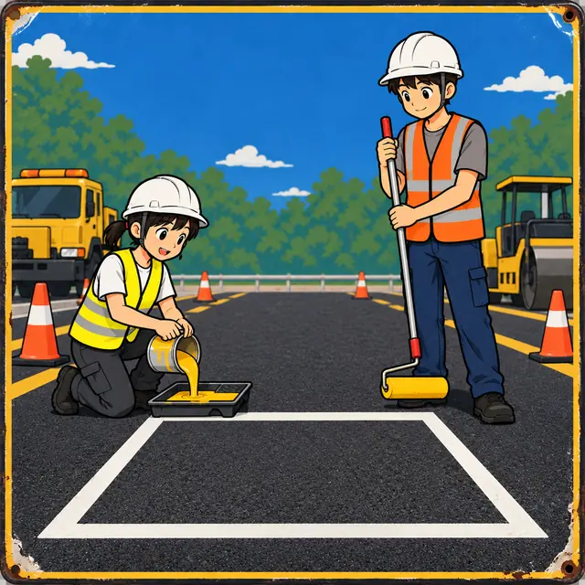
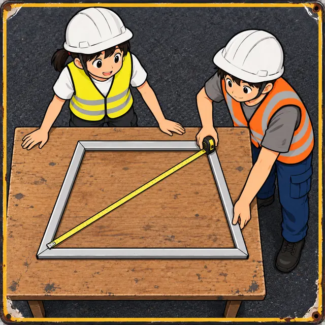
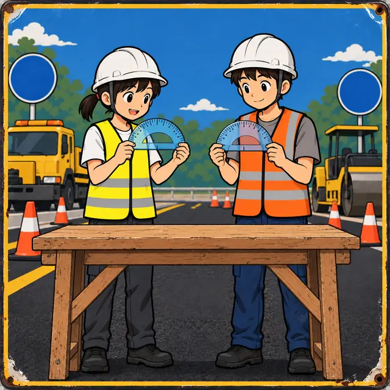

課前暖身漫畫：停車格是長方形嗎？
停車格畫好了，可是工地沒有那麼大的直角尺。小線拿出捲尺量兩條對角線：兩條一樣長，而且中點在同一個地方——這樣就能確定四個角都是直角。這一節要說明為什麼可以這樣檢查。
重點 1：長方形的兩條對角線等長且互相平分
重點整理與敘述
- 長方形（矩形）是四個內角都是直角的四邊形。它的兩雙對角分別相等，所以也是平行四邊形，平行四邊形的性質它全都有。
- 對角線等長：在 △\(ABC\) 與 △\(DCB\) 中，\(\overline{AB} = \overline{DC}\)、\(\angle ABC = \angle DCB = 90^\circ\)、\(\overline{BC}\) 共用，由 SAS 全等得 \(\overline{AC} = \overline{DB}\)。也可以用畢氏定理：兩條對角線的平方都等於 \(\overline{AB}^2 + \overline{BC}^2\)。
- 互相平分是平行四邊形本來就有的，所以交點 \(O\) 到四個頂點一樣遠： \[\overline{OA} = \overline{OB} = \overline{OC} = \overline{OD}\]
- 兩條對角線把長方形切成四個小三角形，面積都是長方形的 \(\frac{1}{4}\)。
- 例：\(\overline{BC} = 24\)、\(\overline{CD} = 7\)，則 \[\begin{aligned} & \overline{BD} = \sqrt{24^2 + 7^2} \\ & = \sqrt{625} = 25 \end{aligned}\] \(\overline{OC} = 25 \div 2 = 12.5\)。

視覺互動探索：拉長、壓扁長方形
調整長方形的長與寬，看兩條對角線的長度怎麼由畢氏定理算出來、交點 \(O\) 到四個頂點是不是一樣遠。切到「△\(BOC\)」看對角線切出來的小三角形。
形成性評量 (長方形的對角線)
Q1. 長方形 \(ABCD\) 中，\(\overline{AB} = 20\)、\(\overline{BC} = 21\)，則兩條對角線長的和是多少？
解析：答案為 B。
\[\begin{aligned} & \overline{AC} = \sqrt{20^2 + 21^2} \\ & = \sqrt{841} = 29 \end{aligned}\]
長方形的兩條對角線等長，所以和是 \(29 + 29 = 58\)。
A 錯：只算了一條對角線。
C 錯：\(20 + 21\) 是兩邊的和，不是對角線。
D 錯：\(2 \times (20 + 21) = 82\) 是長方形的周長。
Q2. 長方形 \(ABCD\) 的兩條對角線交於 \(O\) 點，\(\overline{OB} = 8.5\)、\(\overline{BC} = 15\)，則長方形 \(ABCD\) 的周長是多少？
解析：答案為 D。長方形的對角線互相平分，\(\overline{BD} = 2 \times 8.5 = 17\)。在直角 △\(BCD\) 中
\[\begin{aligned} & \overline{CD}^2 = 17^2 - 15^2 \\ & = 289 - 225 = 64 \end{aligned}\]
得 \(\overline{CD} = 8\)，周長 \(= 2 \times (15 + 8) = 46\)。
A 錯：\(30\) 是 △\(BOC\) 的面積（長方形面積的 \(\frac{1}{4}\)）。
B 錯：把對角線 \(17\) 當成邊：\(2 \times (15 + 17) = 64\)。
C 錯：\(15 \times 8 = 120\) 是長方形的面積。
重點 2：菱形的兩條對角線互相垂直平分
重點整理與敘述
- 菱形是四個邊都相等的四邊形。它的兩雙對邊分別相等，所以也是平行四邊形。
- 菱形的兩條對角線都是對稱軸，所以兩條對角線互相垂直平分，而且平分四個內角。
- 對角線把菱形切成四個全等的直角三角形：兩股是兩條對角線的一半，斜邊是菱形的邊長。
- 例：\(\overline{AO} = 8\)、\(\overline{BO} = 15\)，則 \[\overline{AB} = \sqrt{8^2 + 15^2} = 17\] 周長是 \(68\)。
- 角度：相鄰兩角互補；\(\angle BAO = \frac{1}{2}\angle BAD\)，而 \(\angle ABO = 90^\circ - \angle BAO\)。

視覺互動探索：菱形的四個直角三角形
「長度」模式調整半條對角線 \(\overline{AO}\)、\(\overline{BO}\)，看邊長怎麼算；「角度」模式調整 \(\angle BAD\)，看對角線怎麼把內角分成兩半。
形成性評量 (菱形的對角線)
Q3. 菱形 \(ABCD\) 的兩條對角線交於 \(O\) 點，\(\overline{BC} = 29\)、\(\overline{AC} = 40\)，則 \(\overline{BD}\) 是多少？
解析：答案為 C。菱形的對角線互相垂直平分，\(\overline{OC} = 40 \div 2 = 20\)。在直角 △\(OBC\) 中
\[\begin{aligned} & \overline{OB}^2 = 29^2 - 20^2 \\ & = 841 - 400 = 441 \end{aligned}\]
得 \(\overline{OB} = 21\)，\(\overline{BD} = 2 \times 21 = 42\)。
A 錯：\(21\) 只是 \(\overline{OB}\)，忘了乘 \(2\)。
B 錯：\(58\) 是兩倍的邊長。
D 錯：乘了兩次 \(2\)。
Q4. 菱形 \(ABCD\) 中，\(\angle ABC = 124^\circ\)，兩條對角線交於 \(O\) 點，則 \(\angle OAD\) 是幾度？
解析：答案為 A。菱形相鄰兩角互補：
\[\angle BAD = 180^\circ - 124^\circ = 56^\circ\]
對角線 \(\overline{AC}\) 平分 \(\angle BAD\)，所以 \(\angle OAD = 56^\circ \div 2 = 28^\circ\)。
B 錯：\(56^\circ\) 是整個 \(\angle BAD\)，還沒平分。
C 錯：\(90^\circ - 56^\circ\) 把整個 \(\angle BAD\) 當成小直角三角形裡的銳角。
D 錯：\(124^\circ \div 2 = 62^\circ\) 是 \(\angle ABO\)，在 \(B\) 那一端。
重點 3：對角線互相垂直，面積是兩對角線乘積的一半
重點整理與敘述
- 菱形 \(ABCD\) 被對角線 \(\overline{BD}\) 分成兩個三角形，底都是 \(\overline{BD}\)，高分別是 \(\overline{OA}\)、\(\overline{OC}\)： \[\begin{aligned} & \frac{1}{2}\overline{BD} \times \overline{OA} + \frac{1}{2}\overline{BD} \times \overline{OC} \\ & = \frac{1}{2}\overline{BD} \times \overline{AC} \end{aligned}\]
- 推導只用到「兩條對角線互相垂直」，所以任何對角線互相垂直的四邊形都適用，箏形、正方形也一樣。
- 另一種看法：以兩條對角線為長、寬作外框長方形，四邊形剛好佔外框的一半。
- 例：兩條對角線長 \(14\) 與 \(9\)，面積是 \(\frac{1}{2} \times 14 \times 9 = 63\)。

視覺互動探索：外框長方形的一半
調整兩條對角線的長，以及交點 \(O\) 落在哪裡（\(\overline{AO}\)、\(\overline{BO}\)）。每一小塊長方形都被四邊形的邊切成兩個全等三角形——不管交點在哪，面積都是外框的一半。
形成性評量 (由對角線求面積)
Q5. 一張長方形色紙 \(ABCD\)，\(\overline{AD} = 16\) 公分、\(\overline{AB} = 26\) 公分。把四邊的中點連起來、剪掉四個角，剩下一個菱形。這個菱形的面積是多少平方公分？
解析：答案為 D。菱形的兩條對角線分別和色紙的兩邊一樣長：\(16\) 與 \(26\)，所以面積是
\[\frac{1}{2} \times 16 \times 26 = 208\]
A 錯：\(16 \times 26 = 416\) 是整張色紙，忘了除以 \(2\)。
B 錯：除以 \(4\) 了——剪掉的四個角合起來是色紙的一半，剩下的也是一半。
C 錯：\(2 \times (16 + 26) = 84\) 是色紙的周長。
Q6. 四邊形 \(ABCD\) 的兩條對角線互相垂直，\(\overline{AC} = 15\)，面積是 \(60\)，則 \(\overline{BD}\) 是多少？
解析：答案為 B。對角線互相垂直，面積是乘積的一半：
\[\frac{1}{2} \times 15 \times \overline{BD} = 60\]
得 \(\overline{BD} = 8\)。
A 錯：\(60 \div 15 = 4\) 漏掉了公式裡的 \(\frac{1}{2}\)。
C 錯：\(8\) 已經是整條對角線，不必再乘 \(2\)。
D 錯：\(60 - 15\)，面積和長度不能相減。
重點 4：箏形的一條對角線垂直平分另一條
重點整理與敘述
- 箏形是兩雙鄰邊分別等長的四邊形：\(\overline{AB} = \overline{AD}\)、\(\overline{CB} = \overline{CD}\)。
- 對角線 \(\overline{AC}\) 是對稱軸，所以 \(\overline{AC}\) 垂直平分 \(\overline{BD}\)，並平分 \(\angle BAD\) 與 \(\angle BCD\)；另外 \(\angle ABC = \angle ADC\)（△\(ABC\) \(\cong\) △\(ADC\)，SSS）。
- 反過來，\(\overline{BD}\) 不一定平分 \(\overline{AC}\)：\(\overline{AO}\) 和 \(\overline{OC}\) 通常不相等。
- 箏形不一定是平行四邊形：相等的是鄰邊，不是對邊。
- 兩條對角線互相垂直，所以面積 \(= \frac{1}{2} \times \overline{AC} \times \overline{BD}\)。
- 例：\(\overline{AB} = 15\)、\(\overline{CB} = 41\)、\(\overline{BO} = 9\)，則 \(\overline{AO} = 12\)、\(\overline{OC} = 40\)，\(\overline{AC} = 52\)。

視覺互動探索：做一只風箏
\(\overline{AC}\) 是直的竹條、\(\overline{BD}\) 是橫的竹條。調整 \(\overline{AO}\)、\(\overline{OC}\)、\(\overline{BO}\)，看哪些邊相等、哪些角被平分；把 \(\overline{AO}\) 調成和 \(\overline{OC}\) 一樣長會發生什麼事？
形成性評量 (箏形)
Q7. 如圖，箏形 \(ABCD\) 中，\(\overline{AB} = \overline{AD} = 13\)、\(\overline{CB} = \overline{CD} = 20\)，對角線交於 \(O\) 點，\(\overline{BO} = 12\)，則 \(\overline{AC}\) 是多少？
解析：答案為 A。箏形的 \(\overline{AC}\) 垂直平分 \(\overline{BD}\)，△\(ABO\) 與 △\(CBO\) 都是直角三角形：
\[\begin{aligned} & \overline{AO} = \sqrt{13^2 - 12^2} = 5 \\ & \overline{OC} = \sqrt{20^2 - 12^2} = 16 \end{aligned}\]
\(\overline{AC} = 5 + 16 = 21\)。
B 錯：\(16 - 5 = 11\)；\(O\) 在 \(A\)、\(C\) 之間，要相加。
C 錯：\(13 + 20 = 33\) 是兩邊的和。
D 錯：\(24\) 是 \(\overline{BD}\)。
Q8. 箏形 \(ABCD\) 中，\(\overline{AB} = \overline{AD}\)、\(\overline{CB} = \overline{CD}\)，\(\angle BAD = 64^\circ\)、\(\angle BCD = 40^\circ\)，則 \(\angle ABC\) 是幾度？
解析：答案為 C。箏形的 \(\angle ABC = \angle ADC\)，四個角的和是 \(360^\circ\)：
\[\begin{aligned} & 2\angle ABC = 360^\circ - 64^\circ - 40^\circ \\ & = 256^\circ \end{aligned}\]
得 \(\angle ABC = 128^\circ\)。
A 錯：\((64^\circ + 40^\circ) \div 2\)，不是四邊形內角和的算法。
B 錯：\(180^\circ - 64^\circ\)——箏形不是平行四邊形，相鄰兩角不一定互補。
D 錯：\(64^\circ + 40^\circ\) 是兩個頂角的和。
重點 5：正方形的對角線等長且互相垂直平分
重點整理與敘述
- 正方形是四個角都是直角、四個邊都相等的四邊形。
- 它是長方形，所以對角線等長且互相平分；它也是菱形，所以對角線互相垂直平分。合起來： \[\overline{OA} = \overline{OB} = \overline{OC} = \overline{OD}\] 而且兩條對角線互相垂直。
- 由對角線求邊長：△\(AOB\) 是等腰直角三角形，\(\overline{AB}^2 = \overline{OA}^2 + \overline{OB}^2\)。
- 例：\(\overline{AC} = 12\)，則 \(\overline{OA} = \overline{OB} = 6\)，\(\overline{AB} = 6\sqrt{2}\)，周長 \(24\sqrt{2}\)，面積 \(\frac{1}{2} \times 12 \times 12 = 72\)。
- 坐標：已知 \(A\)、\(C\)，先找中點 \(O\)；\(\overline{AC}\) 水平時，\(B\)、\(D\) 就在 \(O\) 的正上方與正下方，距離等於 \(\overline{OA}\)。

視覺互動探索：由 A、C 找出 B、D
對角線的中點 \(O\) 固定在 \((6, 5)\)。調整 \(A\) 相對於 \(O\) 的位置（往右幾格、往上幾格），\(C\) 會在對面。把黃色的「斜率三角形」轉 \(90^\circ\)，就得到藍色的 \(O \to B\)。
形成性評量 (正方形)
Q9. 正方形 \(ABCD\) 的兩條對角線交於 \(O\) 點，\(\overline{BD} = 14\)，則正方形的周長與面積分別是多少？
解析：答案為 B。正方形的對角線等長且互相垂直平分，\(\overline{OA} = \overline{OB} = 7\)：
\[\overline{AB} = \sqrt{7^2 + 7^2} = 7\sqrt{2}\]
周長 \(= 4 \times 7\sqrt{2} = 28\sqrt{2}\)，面積 \(= \frac{1}{2} \times 14 \times 14 = 98\)。
A 錯：把對角線 \(14\) 當成邊長。
C 錯：面積用了 \(14 \times 14\)，忘了除以 \(2\)。
D 錯：把 \(\overline{OA} = 7\) 當成邊長。
Q10. 坐標平面上，正方形 \(ABCD\) 的頂點 \(A(-4, 1)\)、\(C(6, 1)\)，則 \(B\)、\(D\) 兩點的坐標是哪一組？
解析：答案為 D。對角線的中點 \(O(1, 1)\)，\(\overline{AC} = 6 - (-4) = 10\)，所以 \(\overline{OB} = \overline{OD} = 5\)。\(\overline{AC}\) 是水平的，\(\overline{BD}\) 就是鉛垂的：\(B\)、\(D\) 是 \((1, 1 + 5)\)、\((1, 1 - 5)\)。
A 錯：用了整條對角線 \(10\)，忘了取一半。
B 錯：以為 \(B\) 在 \(A\) 的正上方、\(D\) 在 \(C\) 的正下方，那樣圍出來的不是正方形。
C 錯：忘了 \(O\) 的 \(y\) 坐標是 \(1\)，從 \(y = 0\) 往上下走。
重點 6：只看對角線，判別長方形、菱形、箏形
重點整理與敘述
- 前面的性質反過來也成立，可以用來判別：
| 兩條對角線 | 四邊形 |
|---|---|
| 互相平分 | 平行四邊形 |
| 等長且互相平分 | 長方形 |
| 互相垂直平分 | 菱形 |
| 等長且互相垂直平分 | 正方形 |
| 一條垂直平分另一條 | 箏形 |
- 長方形：\(\overline{OA} = \overline{OB} = \overline{OC} = \overline{OD}\)，△\(AOB\)、△\(AOD\) 都是等腰三角形；△\(ABD\) 的內角和讓 \(\angle DAB\) 恰好是 \(90^\circ\)，四個角同理。
- 菱形：\(\overline{AC}\) 垂直 \(\overline{BD}\) 又通過它的中點，是 \(\overline{BD}\) 的中垂線，所以 \(\overline{AB} = \overline{AD}\)；同理 \(\overline{BA} = \overline{BC}\)，四邊相等。
- 箏形：只要 \(\overline{BD}\) 垂直平分 \(\overline{AC}\)，就有 \(\overline{DA} = \overline{DC}\)、\(\overline{BA} = \overline{BC}\)。
- ⚠️ 只有「等長」不一定是長方形，只有「垂直」不一定是菱形——少了互相平分，交點可以偏到一邊去。

視覺互動探索：對角線判別器
分別調整交點 \(O\) 到四個頂點的距離與兩條對角線的夾角。畫布會檢查三個條件，判斷這是哪一種四邊形，並量出四個內角驗證。試著做出「等長但不是長方形」「垂直但不是菱形」的例子。
形成性評量 (由對角線判別)
Q11. 四邊形 \(ABCD\) 的兩條對角線等長而且互相垂直，則下列敘述何者正確？
解析：答案為 D。題目沒有說對角線互相平分。例如兩條對角線都長 \(6\)、互相垂直，但 \(\overline{OA} = 1\)、\(\overline{OC} = 5\)、\(\overline{OB} = \overline{OD} = 3\)：這是箏形，連平行四邊形都不是。
A 錯：正方形要「等長且互相垂直平分」。
B 錯：長方形要「等長且互相平分」。
C 錯：菱形要「互相垂直平分」。
Q12. 直線 \(L_1\) 與 \(L_2\) 互相垂直，交於 \(P\) 點。以 \(P\) 為圓心畫兩個半徑不同的圓：小圓交 \(L_1\) 於 \(A\)、\(C\) 兩點，大圓交 \(L_2\) 於 \(B\)、\(D\) 兩點。四邊形 \(ABCD\) 是什麼形狀？
解析：答案為 A。\(\overline{PA} = \overline{PC}\)（小圓半徑）、\(\overline{PB} = \overline{PD}\)（大圓半徑），所以兩條對角線互相平分；又 \(L_1 \perp L_2\)，兩條對角線互相垂直平分，是菱形。
B 錯：長方形要兩條對角線等長，但 \(\overline{AC}\) 是小圓直徑、\(\overline{BD}\) 是大圓直徑，不一樣長。
C 錯：同樣因為對角線不等長，不是正方形。
D 錯：它是平行四邊形沒錯，但對角線還互相垂直，可以確定是菱形。
重點 7：特殊四邊形的包含關係
重點整理與敘述
- 長方形、菱形都是平行四邊形；正方形既是長方形（四個直角），也是菱形（四邊相等）。
- 箏形自成一個家族：兩雙鄰邊分別等長，不一定是平行四邊形。
- 梯形只有一雙對邊平行；平行四邊形有兩雙，所以平行四邊形不是梯形。等腰梯形是梯形的一種。
- 下面是各種四邊形的對角線性質（✓ 表示一定成立）：
| 四邊形 | 互相平分 | 互相垂直 | 等長 |
|---|---|---|---|
| 平行四邊形 | ✓ | ||
| 長方形 | ✓ | ✓ | |
| 菱形 | ✓ | ✓ | |
| 正方形 | ✓ | ✓ | ✓ |
| 箏形 | ✓ | ||
| 等腰梯形 | ✓ |

視覺互動探索：它屬於哪幾個家族？
從一般的平行四邊形開始調整（也可以切到箏形看看）。下方的家族圖會亮起它所屬的每一個家族——箭頭往下讀作「是一種」。試著讓「正方形」亮起來，看看它同時屬於幾個家族。
形成性評量 (包含關係)
Q13. 下列敘述何者錯誤？
解析：答案為 C。四個邊都相等只能確定是菱形；還要四個角都是直角，才是正方形。
A 對：正方形四個角都是直角，符合長方形的定義。
B 對：菱形兩雙對邊分別相等，是平行四邊形。
D 對：正方形四個邊都相等，符合菱形的定義。
Q14. 下列哪一個性質，菱形一定有，長方形卻不一定有？
解析：答案為 B。菱形的對角線互相垂直平分；長方形的對角線只保證等長且互相平分，要鄰邊也相等（也就是正方形）才會互相垂直。
A 錯：長方形和菱形都是平行四邊形，對角線都互相平分。
C 錯：方向相反，這是長方形一定有、菱形不一定有的性質。
D 錯：兩者都是平行四邊形，兩雙對邊都分別平行。
重點 8：梯形兩腰中點的連線段
重點整理與敘述
- 梯形 \(ABCD\) 中 \(\overline{AD} \parallel \overline{BC}\)：平行的兩邊是上底、下底，不平行的兩邊是腰，腰與下底的夾角是底角。
- \(E\)、\(F\) 分別是兩腰 \(\overline{AB}\)、\(\overline{DC}\) 的中點，\(\overline{EF}\) 叫做兩腰中點的連線段。
- 性質：\(\overline{EF} \parallel \overline{AD} \parallel \overline{BC}\)，而且 \[\overline{EF} = \frac{1}{2}(\overline{AD} + \overline{BC})\]
- 理由：把一個一樣的梯形倒過來接在旁邊，拼成平行四邊形，它的底是 \(\overline{AD} + \overline{BC}\)；\(\overline{EF}\) 剛好是對應那條線段的一半。
- 例：\(\overline{AD} = 8\)、\(\overline{BC} = 20\)，則 \(\overline{EF} = 14\)。常見錯誤是寫成兩底差的一半。
- 兩腰各分成四等分時，先算正中間那一條，上半、下半再各用一次這個性質。
視覺互動探索：兩個梯形拼成平行四邊形
調整上底、下底與梯形的歪斜程度。「中點連線段」模式把梯形繞 \(F\) 轉半圈拼成平行四邊形；「四等分」模式把兩腰各分成四等分，看三條線段怎麼一條一條算出來。
形成性評量 (兩腰中點的連線段)
Q15. 梯形 \(ABCD\) 中，\(\overline{AD} \parallel \overline{BC}\)，\(E\)、\(F\) 分別是 \(\overline{AB}\)、\(\overline{DC}\) 的中點。若 \(\overline{AD} = 9\)、\(\overline{BC} = 23\)，則 \(\overline{EF}\) 是多少？
解析：答案為 A。
\[\overline{EF} = \frac{1}{2}(9 + 23) = 16\]
B 錯：\(23 - 9 = 14\) 是兩底的差。
C 錯：\(9 + 23 = 32\) 是兩底的和，還沒除以 \(2\)。
D 錯：\((23 - 9) \div 2 = 7\) 是兩底差的一半。
Q16. 如圖，梯形 \(ABCD\) 中 \(\overline{AD} \parallel \overline{BC}\)，\(\overline{AD} = 6\)、\(\overline{BC} = 34\)。\(E\)、\(F\)、\(G\) 由上往下把 \(\overline{AB}\) 四等分，\(H\)、\(I\)、\(J\) 由上往下把 \(\overline{DC}\) 四等分，且 \(\overline{EH}\)、\(\overline{FI}\)、\(\overline{GJ}\) 都平行底邊。\(\overline{GJ}\) 是多少？
解析：答案為 C。\(\overline{FI}\) 是梯形 \(ABCD\) 兩腰中點的連線段，\(\overline{GJ}\) 是梯形 \(FBCI\) 兩腰中點的連線段：
\[\begin{aligned} & \overline{FI} = \frac{1}{2}(6 + 34) = 20 \\ & \overline{GJ} = \frac{1}{2}(20 + 34) = 27 \end{aligned}\]
A 錯：\(20\) 是 \(\overline{FI}\)。
B 錯：\(13 = \frac{1}{2}(6 + 20)\) 是 \(\overline{EH}\)。
D 錯：\(34 + 7 = 41\)，往下應該越來越接近 \(34\)，不會超過下底。
重點 9：梯形面積 = 兩腰中點的連線段 × 高
重點整理與敘述
- 梯形面積 \(= \dfrac{\text{上底} + \text{下底}}{2} \times \text{高}\)，而 \(\dfrac{\text{上底} + \text{下底}}{2}\) 正是兩腰中點的連線段長，所以 \[\text{梯形面積} = \overline{EF} \times \text{高}\]
- 反過來求底：\(\overline{BC} = 2\overline{EF} - \overline{AD}\)。
- 例：\(\overline{EF} = 9\)、高 \(6\)，面積 \(= 54\)；若 \(\overline{AD} = 4\)，則 \(\overline{BC} = 2 \times 9 - 4 = 14\)。
- \(\overline{EF}\) 把高分成兩半，但上下兩塊面積不相等：上面那塊的兩底都比較短。
- 要把梯形分成面積相等的兩塊，可以連接上底中點與下底中點：兩塊的高相同，上下底的和也相同。

視覺互動探索：剪角補角
「面積」模式：過 \(E\)、\(F\) 作鉛垂線，左右各剪下一個三角形、轉半圈補到上面，梯形就變成長方形。「平分面積」模式：比較「連接兩底中點的 \(\overline{PQ}\)」與「下底 \(\overline{BC}\) 的中垂線」，哪一條真的把面積分成兩半。
形成性評量 (梯形面積)
Q17. 一個梯形兩腰中點的連線段長和它的高一樣長，梯形面積是 \(121\)，則這個梯形上底與下底的和是多少？
解析：答案為 B。設中點連線段長 \(=\) 高 \(= x\)，面積 \(= x \times x = 121\)，\(x = 11\)（負不合）。兩底的和是中點連線段的 \(2\) 倍：\(2 \times 11 = 22\)。
A 錯：\(11\) 是中點連線段，不是兩底的和。
C 錯：\(121 \div 2\)，把面積公式用錯了。
D 錯：\(4 \times 11 = 44\)，多乘了一次 \(2\)。
Q18. 如圖，梯形 \(ABCD\) 中 \(\overline{AD} \parallel \overline{BC}\)，\(\overline{AD} = 5\)、\(\overline{BC} = 17\)，高是 \(8\)，\(\overline{EF}\) 是兩腰中點的連線段。梯形 \(AEFD\) 的面積是多少？
解析：答案為 D。\(\overline{EF} = \frac{1}{2}(5 + 17) = 11\)，\(\overline{EF}\) 把高分成兩半，梯形 \(AEFD\) 的高是 \(4\)：
\[\frac{(5 + 11) \times 4}{2} = 32\]
A 錯：\(88 \div 2 = 44\)，以為 \(\overline{EF}\) 把梯形分成面積相等的兩塊。
B 錯：\(56\) 是下面那塊梯形 \(EBCF\) 的面積。
C 錯：\(88\) 是整個梯形的面積。
重點 10：等腰梯形的兩底角相等
重點整理與敘述
- 兩腰相等的梯形叫做等腰梯形。它是線對稱圖形，對稱軸同時是上底、下底的中垂線。
- 兩底角相等：從 \(A\)、\(D\) 作高 \(\overline{AE}\)、\(\overline{DF}\)。平行線間的距離處處相等，\(\overline{AE} = \overline{DF}\)；又 \(\overline{AB} = \overline{DC}\)，由 RHS 全等得 △\(ABE\) \(\cong\) △\(DCF\)，所以 \(\angle B = \angle C\)。
- 同一次全等還得到 \(\overline{BE} = \overline{CF} = \frac{1}{2}(\overline{BC} - \overline{AD})\)，解題時很常用。
- \(\overline{AD} \parallel \overline{BC}\)，所以 \(\angle A + \angle B = 180^\circ\)；上底的兩個角也相等：\(\angle A = \angle D\)。
- 例：\(\angle B = 70^\circ\)，則 \(\angle C = 70^\circ\)、\(\angle A = \angle D = 110^\circ\)。
視覺互動探索：調整底角
調整底角 \(\angle B\) 與上底、下底的長度，看四個角怎麼互相決定。切到「對稱軸與高」，看作高之後切出的兩個全等直角三角形。
形成性評量 (等腰梯形的底角)
Q19. 等腰梯形 \(ABCD\) 中 \(\overline{AD} \parallel \overline{BC}\)，\(\angle A + \angle D = 248^\circ\)，則 \(\angle B\) 是幾度？
解析：答案為 A。等腰梯形兩底角相等，\(\angle B = \angle C\)：
\[\begin{aligned} & 2\angle B = 360^\circ - 248^\circ = 112^\circ \\ & \angle B = 56^\circ \end{aligned}\]
B 錯：\(124^\circ\) 是 \(\angle A\)（\(248^\circ \div 2\)）。
C 錯：把 \(\angle A\) 再除以 \(2\)。
D 錯：\(112^\circ\) 是 \(\angle B + \angle C\)，還沒除以 \(2\)。
Q20. 等腰梯形 \(ABCD\) 中 \(\overline{AD} \parallel \overline{BC}\)，\(\angle A = (2x + 8)^\circ\)、\(\angle C = (x + 16)^\circ\)，則 \(\angle D\) 是幾度？
解析：答案為 C。\(\angle B = \angle C = (x + 16)^\circ\)，而 \(\angle A + \angle B = 180^\circ\)：
\[\begin{aligned} & (2x + 8) + (x + 16) = 180 \\ & 3x = 156 \\ & x = 52 \end{aligned}\]
\(\angle A = 2 \times 52 + 8 = 112^\circ\)，\(\angle D = \angle A = 112^\circ\)。
A 錯：\(68^\circ\) 是 \(\angle C\)。
B 錯：\(52\) 是 \(x\)，不是角度。
D 錯：把 \(\angle A\) 與 \(\angle C\) 當成相等，\(2x + 8 = x + 16\) 得 \(x = 8\)；但等腰梯形相等的是兩底角，\(\angle A\) 與 \(\angle C\) 是互補。
重點 11：等腰梯形的兩條對角線等長
重點整理與敘述
- △\(ABC\) 與 △\(DCB\) 中，\(\overline{AB} = \overline{DC}\)、\(\angle ABC = \angle DCB\)、\(\overline{BC}\) 共用，由 SAS 全等得 \(\overline{AC} = \overline{DB}\)：等腰梯形的兩條對角線等長。
- 但兩條對角線不互相平分（它不是平行四邊形）。
- 求對角線長：從 \(D\) 作高 \(\overline{DQ}\)， \[\overline{BQ} = \overline{BP} + \overline{PQ} = \frac{\overline{AD} + \overline{BC}}{2}\] 再用畢氏定理：\(\overline{BD}^2 = \overline{DQ}^2 + \overline{BQ}^2\)。
- 例：\(\overline{AD} = 4\)、\(\overline{BC} = 14\)、高 \(12\)，\(\overline{BQ} = 9\)，\(\overline{BD} = \sqrt{12^2 + 9^2} = 15\)。

視覺互動探索：作高求對角線
調整上底、下底和高。「求對角線」模式畫出兩條高與直角三角形 \(BQD\)；「全等說明」模式看 △\(ABC\) 與 △\(DCB\) 怎麼由 SAS 疊在一起。
形成性評量 (等腰梯形的對角線)
Q21. 如圖，等腰梯形 \(ABCD\) 中 \(\overline{AD} \parallel \overline{BC}\)，\(\overline{AD} = 7\)、\(\overline{BC} = 17\)。過 \(A\)、\(D\) 作 \(\overline{BC}\) 的垂直線段，垂足為 \(P\)、\(Q\)，\(\overline{AP} = \overline{DQ} = 12\)，則對角線 \(\overline{AC}\) 是多少？
解析：答案為 B。\(\overline{BP} = (17 - 7) \div 2 = 5\)，\(\overline{PC} = 17 - 5 = 12\)：
\[\overline{AC} = \sqrt{12^2 + 12^2} = 12\sqrt{2}\]
A 錯：\(\sqrt{12^2 + 5^2} = 13\) 是腰 \(\overline{AB}\) 的長。
C 錯：把兩底的差 \(10\) 當成水平距離：\(\sqrt{12^2 + 10^2}\)。
D 錯：\(17\) 是下底 \(\overline{BC}\)。
Q22. 等腰梯形 \(ABCD\) 中 \(\overline{AD} \parallel \overline{BC}\)，\(\overline{AD} = 11\)、\(\overline{BC} = 19\)，對角線 \(\overline{AC} = 17\)，則梯形 \(ABCD\) 的面積是多少？
解析：答案為 A。作 \(\overline{AE} \perp \overline{BC}\)：\(\overline{BE} = (19 - 11) \div 2 = 4\)，\(\overline{CE} = 19 - 4 = 15\)。
\[\overline{AE} = \sqrt{17^2 - 15^2} = 8\]
面積 \(= \frac{11 + 19}{2} \times 8 = 15 \times 8 = 120\)。（\(\overline{CE}\) 剛好等於兩腰中點的連線段長。）
B 錯：\(15 \times 8\) 又除以了 \(2\)。
C 錯：\(17 \times 8\)，用對角線當底。
D 錯：\(15 \times 17\)，把對角線當成高。
重點 12：兩底角相等的梯形是等腰梯形
重點整理與敘述
- 梯形 \(ABCD\) 中 \(\overline{AD} \parallel \overline{BC}\)，若 \(\angle ABC = \angle DCB\)，則它是等腰梯形。
- 理由：過 \(D\) 作 \(\overline{DE} \parallel \overline{AB}\) 交 \(\overline{BC}\) 於 \(E\)。\(ABED\) 是平行四邊形，\(\overline{DE} = \overline{AB}\)、\(\angle DEC = \angle B\)（同位角）。又 \(\angle B = \angle C\)，△\(DEC\) 是等腰三角形，\(\overline{DE} = \overline{DC}\)，所以 \(\overline{AB} = \overline{DC}\)。
- 上底兩角相等、或兩條對角線等長的梯形，也都是等腰梯形。
- ⚠️ 先確認它是梯形：若 \(\angle B + \angle C = 180^\circ\)，兩腰也平行，那是平行四邊形。
- 由四個內角判斷（依 \(\angle A\)、\(\angle B\)、\(\angle C\)、\(\angle D\) 的順序）：先看 \(\angle A + \angle B = 180^\circ\) 確定 \(\overline{AD} \parallel \overline{BC}\)，再看 \(\angle B = \angle C\)。例：\(115^\circ\)、\(65^\circ\)、\(65^\circ\)、\(115^\circ\) 是等腰梯形。

視覺互動探索：底角相等，兩腰就相等
下底 \(\overline{BC}\) 與高固定，分別調整兩個底角 \(\angle B\)、\(\angle C\)。畫布作出 \(\overline{DE} \parallel \overline{AB}\)，看 △\(DEC\) 什麼時候是等腰三角形，並比較兩腰與兩條對角線。也試試看 \(\angle B + \angle C = 180^\circ\)。
形成性評量 (等腰梯形的判別)
Q23. 四個四邊形 \(ABCD\) 的內角依 \(\angle A\)、\(\angle B\)、\(\angle C\)、\(\angle D\) 的順序寫在下面，哪一個是等腰梯形？
解析：答案為 C。\(\angle A + \angle B = 180^\circ\)，所以 \(\overline{AD} \parallel \overline{BC}\)；\(\angle B + \angle C = 244^\circ\)，兩腰不平行，是梯形；兩底角 \(\angle B = \angle C = 122^\circ\)，是等腰梯形。
A 錯：\(\angle B + \angle C = 180^\circ\)，兩雙對邊都平行，是平行四邊形。
B 錯：是 \(\overline{AD} \parallel \overline{BC}\) 的梯形，但 \(\angle B = 78^\circ \ne \angle C = 68^\circ\)。
D 錯：同樣是梯形，但 \(\angle B = 116^\circ \ne \angle C = 124^\circ\)。
Q24. 梯形 \(ABCD\) 中 \(\overline{AD} \parallel \overline{BC}\)，兩條對角線交於 \(P\) 點。再加上哪一個條件後，\(ABCD\) 不一定是等腰梯形？
解析：答案為 D。對角線互相垂直只限制了夾角，交點 \(P\) 兩側的長度可以不對稱，畫得出兩腰不相等的梯形。
A 對：對角線等長的梯形是等腰梯形。
B 對：兩底角相等的梯形是等腰梯形。
C 對：同樣得到兩底角相等：
\[\begin{aligned} & \angle B = 180^\circ - \angle A \\ & = 180^\circ - \angle D = \angle C \end{aligned}\]
小節總結與核心回顧
特殊四邊形速查表
- 長方形：對角線等長且互相平分；反過來也能判別。
- 菱形：對角線互相垂直平分、平分內角；反過來也能判別。
- 箏形：一條對角線垂直平分另一條；不一定是平行四邊形。
- 正方形：對角線等長且互相垂直平分；它是長方形，也是菱形。
- 面積：對角線互相垂直的四邊形 \(=\) 兩對角線乘積 \(\div 2\)；梯形 \(=\) 兩腰中點的連線段 \(\times\) 高。
- 兩腰中點的連線段：平行兩底，長度是兩底和的一半。
- 等腰梯形：兩底角相等、對角線等長、線對稱；兩底角相等的梯形是等腰梯形。
回到道路工班：收工前的驗收
停車格
小線量停車格的兩條對角線：一樣長，而且交點剛好是兩條的中點，四個角就一定是直角——不必扛大直角尺。
菱形標線
阿平要算菱形標線用多少漆：量兩條對角線，乘起來再除以 \(2\) 就是面積，不必先求邊長。
梯形分隔島
分隔島是上窄下寬的等腰梯形。兩條斜邊的中點拉一條線，量出來剛好是上下兩邊的平均；再乘上分隔島的寬度，就是要鋪的面積。下一冊會把這些四邊形的性質用到更多證明裡。